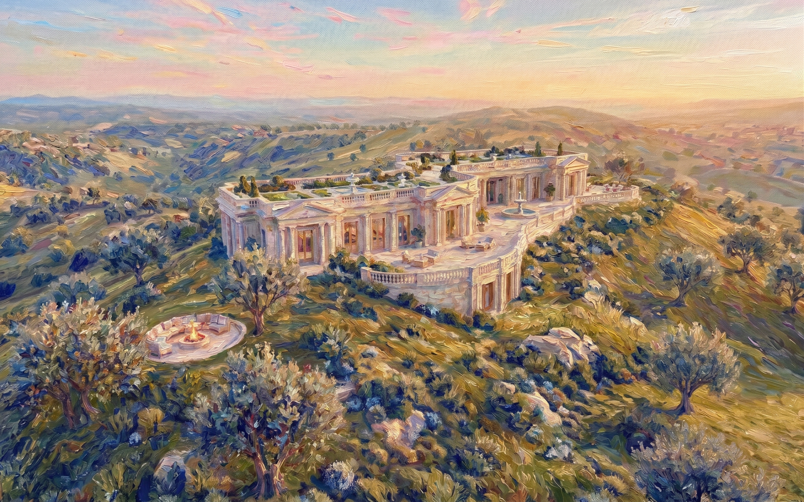

.jpeg)
Aeonic Flourishing
Towards a Psychological and Ecological Civilisation

Towards a Psychological and Ecological Civilisation
1. Lasting for an eon; existing across an indefinitely long or immeasurable period of time. Grounded in deep time.
1. The state of growing or developing in a healthy, vigorous, and highly favorable way. The realization of highest potential within an ecosystem.
A state of civilization designed to thrive in profound psychological well-being and ecological harmony across deep time. It represents a paradigm shift where technological advancement, natural systems, and classical wisdom converge to nurture human and non-human life indefinitely. We are transitioning from an era defined by short-term extraction and immediate survival into an epoch of enduring legacy. By designing our physical spaces and social structures to align with the rhythms of the earth, we forge a resilient culture capable of weathering the centuries. This is not a static utopia, but a dynamic, ever-evolving project of stewardship. It asks us to look beyond our own lifetimes, planting the seeds of monumental forests and philosophical frameworks that our descendants will inhabit. In this vision, technology ceases to be an alienating force and instead becomes the quiet, organic scaffolding that supports the highest expressions of art, culture, and biological vitality.
Flourishing at the level of the mind requires dismantling the alienation and fragmented attention that define modern existence. It is about cultivating deep cognitive liberty, emotional resilience, and a profound sense of meaning. Rather than optimizing the human mind for ceaseless productivity, a psychological civilisation prioritizes holistic well-being, fostering spaces for both intense, directed focus and expansive, receptive rest. It recognizes that true contentment emerges from a balance of neurological states—from the heights of lucid creation to the restorative depths of subconscious wandering. By designing our social environments to support psychological safety and authentic connection, we dissolve the epidemic of isolation. Mental health is no longer viewed merely as the absence of illness, but as the active presence of vitality, curiosity, and a grounded sense of belonging within a larger cosmic and community narrative.
To flourish ecologically is to recognize that human civilization is not separate from the biosphere, but a fully integrated participant within it. We must move decisively beyond the paradigm of extraction and domination, embracing a regenerative model where our cities and technologies function in seamless symbiosis with the natural world. This means constructing infrastructure inspired by biomimicry, where waste becomes food, and architecture acts as a living, breathing extension of the local environment. Urban centers transform into thriving ecosystems, draped in biodiversity, integrating terraced agriculture, and powered by clean, harmonious energy grids. An ecological civilisation closes the metabolic rift, ensuring that every act of human creation simultaneously heals and enriches the earth. We become a keystone species whose presence enhances the vitality, diversity, and resilience of the planetary web of life.
True flourishing cannot be isolated to the individual. It emanates outward through expanding spheres of moral consideration. By moving beyond instinctual nepotism, we recognize that psychological well-being is intrinsically linked to the health of our families, collectives, regions, and ultimately, our entire civilisation. The journey of multi-scale flourishing begins with a grounded self, but it refuses to stop there. As our capacity for empathy deepens, our circles of care widen, transforming self-interest into a profound sense of shared destiny. A healthy individual cannot truly thrive within a fractured family; a family cannot prosper in a degraded community; and a region cannot find balance within an ailing biosphere. Therefore, our ethical frameworks and civic infrastructures must be designed to nourish all scales simultaneously. It is a fractal approach to well-being, where the health of the microscopic reflects and supports the vitality of the macroscopic whole.
Flourishing is not a single, narrow peak of perfection, but a vast and varied landscape of possibilities. Depending on our focus (internal vs. external) and our cognitive state (active vs. passive control), there are distinct quadrants of wellness and diverse expressions of psychological vibrancy waiting to be explored. A healthy civilization does not force its citizens into a monolithic mold of constant, outward-facing productivity. Instead, it recognizes the necessity of full-spectrum consciousness. We must honor the lucid, deliberate states required for deep work and innovation, just as deeply as we honor the receptive, floating states that birth our wildest dreams and intuition. From the hypnotic absorption of collective rituals to the sharp clarity of focused meditation, every quadrant of the human experience serves a vital purpose. By legitimizing and mapping this entire spectrum, we empower individuals to navigate their own unique terrains of flourishing, fully integrating the conscious and subconscious aspects of their minds.